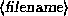
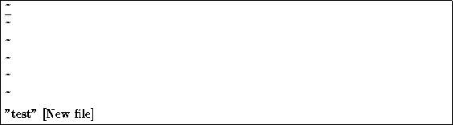

The best way to understand these concepts is to actually fire up vi and edit a file. In the example ``screens'' below, we're only going to show a few lines of text, as if the screen was only six lines high (instead of twenty-four).
The syntax for vi is
vi 
where  is the name of the file that you wish to edit.
is the name of the file that you wish to edit.
Start up vi by typing
/home/larry# vi test
which will edit the file test. You should see something like

The column of ``~'' characters indicates that you are the end of the file.